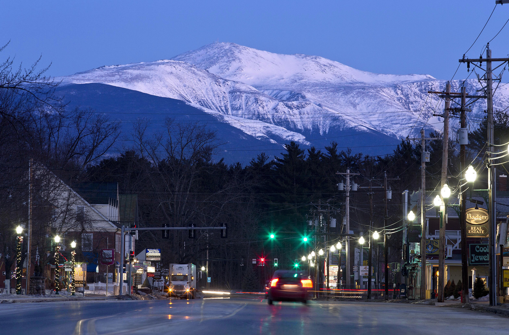
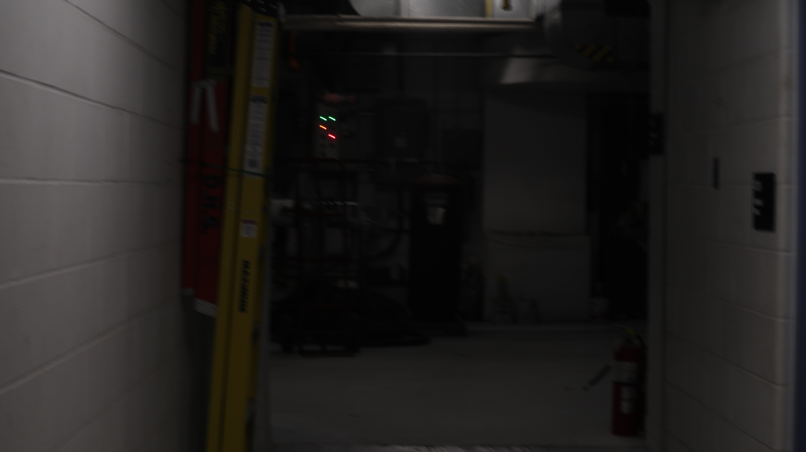
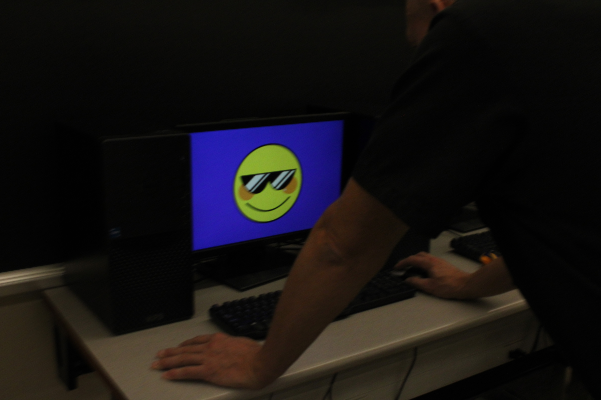

DID YOU KNOW that underneath Mount Washington is a whole building? The COMPLEX is considerably larger than what most people think, which extended 500ft into the mountain and occupied 27 acres of footprint. Dubbed THE GREATEST PASSION PROJECT MADE BY MAN, it still remains to be one of the most obscure locations not known by the world today.
The Complex was completed in 1990, but the origins of when the project started was unknown. With the aforementioned dimensions of the building, it is comparatively larger than the US Pentagon!
WHAT IS THE COMPLEX? A question often asked by many and more to come.....
There are four main parts to the COMPLEX: the entrance, the Habitable Zone, the Uninhabitable Zone, and the control room. These aren't exactly their official terminology in the maps, but are more so the general areas to refer to a specific location inside the building. KEEP THIS IN MIND. All information presented here are FACTUAL and TRUE! Speculation and theories are not added here for efficiency and integrity of the site. THANK YOU.
The Mount Washington Complex, as mysterious as it is, is NOT a SECRET GOVERNMENT FACILITY hosting any Malicious Creatures like Area 51, or a military base, or any of the conspiracy theorist kinds. Please do not spread this notion!!
Refrain from making any plans to try and find the Mount Washington Complex. IT IS NOT FOR PUBLIC USE.
THE ENTRANCE THE HABITABLE ZONE THE UNINHABITABLE ZONE THE CONTROL ROOM
The Entrance
Stepping inside the Complex, the entrance will be the first thing that anyone gets to see. It is not very aesthetically pleasing, because its main purpose is to let people and equipment (big and small) inside the building. It has railings, visible pipes, and overhanging lights that can be described as industrial and rusty. The railings are fitted with little light bulbs attached to them called trail lights. These trail lights activate when the computer detects personnel or otherwise enters the facility, and lights up ones that lead to the location they will be assigned to or want to go to. These light bulbs are placed on regular intervals along the railings, however the precise spacing depends on certain parts of the Complex. This is not believed to affect their functionality. As of now, only the computer activates these lights as a guide, which are very effective. It is worth noting that the lights do not respond to movement and are manually opened by the computer.
There are two main ways to go further underground depending on the location you would want to go in. There is the staircase to the Habitable Zone, which is on the right wing. This is the most common one that is often used for non-personnel, and leads them to the entrance of the Habitable Zone. On the left wing is an elevator that connects to all parts of the COMPLEX, and is the size of a hospital elevator. This is to fit any large equipment like appliances, new parts, machinery, ect. and deliver it to the right area. The elevator can fit 16-24 people inside without any equipment. Depending on where the location is (how deep underground it is), the elevator ride can last anywhere from 5-15 minutes. Aside from these purposes, the entrance is not that useful nor interesting in comparison to the other three. The elevator is reasonably well designed, however.
The Habitable Zone
The Habitable Zone is the second level you'll see once you get down the staircase (or used the elevator). It is the safest place in the Complex, as it was made for people to live in. The Habitable Zone can host up to a population of 300k residents at most, and has a total amount of 15 floors. The first chunk of the first floor is dedicated to the front desk, where an employee, or oftentimes the computer, will be tasked to take and register information about the people going inside the Complex to keep track of who is who into the system.
After that, The Habitable Zone is split into four sections: THE ROOMS, THE MEDICAL WING, THE RECREATIONAL WING, and THE CAFETERIA.
The Uninhabitable Zone
Despite the terminology used to describe this part of the Complex, it is not for any malicious purposes, but rather as a reference for anyone outside of authorized personnel. The Uninhabitable Zone contains the rest of the machinery required for the Habitable Zone to work, like power grids, water supply, ect. The Uninhabitable Zone takes up over ~60-70% of the Complex, including the control room. The transition from the Habitable Zone to the Uninhabitable Zone is very similar to the transition with the entrance and the Habitable Zone, as it is very slow.

The indicators of having reached the Uninhabitable Zone are the presence of the following:
- Pipes
- Metalic wires
- Railings with trail lights attached
- Raw concrete walls
- Sudden dread (this is normal, as many have mentioned having this experience. This is from hearing how sound echoes through the vastness of the Uninhabitable Zone in some areas.)
It is normally recommended to go back to the Habitable Zone if you are not told to go there. The Uninhabitable Zone is very big and is very easy to get lost into, especially without a designated map or the central computer to lead you the way. There have been many cases of people getting lost inside the Uninhabitable Zone, which is very interesting to see.
The Uninhabitable Zone is more or less used as the space for any back-end junk that cannot be displayed safely in the Habitable Zone or otherwise. Therefore, it has been occasionally used as a storage warehouse for unused items, spare parts, and the likes, which is different for the cold storage that will store years of dry goods that can be used for food along with the food from the agriculture wing. However, it is the most useful for hosting multitudes of large machinery required to run the Habitable Zone and even sometimes the entire Complex, such as power grids, HVAC units, and water treatment.
The Control Room
The control room is located at the very bottom of the Uninhabitable Zone, requiring to use The Elevator to get to the location. There is not much information about the control room that can be easily said here other than the fact that it is where the computer resides. It is, however, filled to the brim with rows and rows of data centers, and is home to the computer.
THE MOUNT WASHINGTON SUPERCOMPUTER
"MASTERCOMPUTER OF ARTIFICIAL REGISTRATION AND TELECOMMUNICATIONS INTERNAL NETWORK"

The Mastercomputer of Artificial Registration and Telecommunications Internal Network, or often referred to by other names such as Martin, The Monitor, The Mount Washington Supercomputer, or simply the computer, is a system of neural networks responsible for monitoring, automating, and keeping track of the Complex. It's main role is to keep track of the resources being used in the building like electricity, register anyone who gets in and out of the building, and monitor through the cameras. However, it does also perform other tasks such as being in the PA system, often working with staff to ensure communication is done. The Complex also has its own network system, running independently from the outside world under its system. This network is used across almost all devices, and even the system that controls other parts inside the Complex such as locking and unlocking doors, ventilation, and the cameras. When it is by itself, it often conserves energy by shutting down certain parts that aren't immediately needed, like 90% of the Habitable Zone.
The computer is described to be very advanced, often being able to converse with the staff from time to time and even making decisions for itself. Its personality is POLITE, CALM, and LAID-BACK, with some sense of humor, which still boggles a lot of staff. It often likes to show itself through the cameras, but when it is given the opportunity, it can display itself through devices with screens like computers and TVs. It also has been noted to have a very peculiar affinity for classical music, blasting a few pieces across the entire building. The computer has also been reported to be seen like beetles.
DID YOU KNOW . . .
- The maintainance crew gets sent down to the Complex every once a month to ensure that every essential part of the building is up to date and operational.
Back to the top